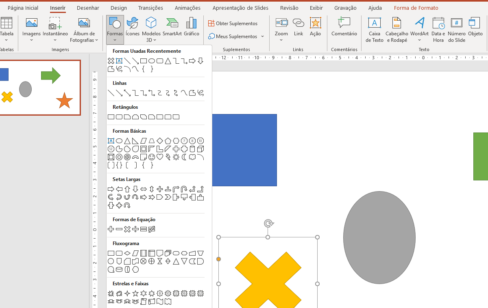

Slides cheios de texto são esquecidos. Slides com elementos visuais bem usados são lembrados. A diferença está em saber o que inserir, onde e por quê.
Uma imagem relevante pode comunicar em segundos o que um parágrafo inteiro levaria minutos para transmitir. Mas atenção: imagem sem propósito é ruído visual — e prejudica tanto quanto a ausência dela.
Para inserir uma imagem do seu computador, acesse Inserir → Imagens → Este Dispositivo. Para buscar imagens diretamente da internet, use Inserir → Imagens → Imagens Online, que integra o buscador Bing e o OneDrive.
Curiosidade: O PowerPoint aceita mais de 15 formatos de imagem diferentes, incluindo
.jpg,.png,.gif,.bmp,.tiffe até.svg. O formato SVG é especialmente interessante porque é vetorial — isso significa que a imagem não perde qualidade ao ser ampliada, por maior que seja o slide ou a tela de projeção.
Após inserir a imagem, a guia Formato da Imagem libera recursos poderosos: recortar em formatos geométricos, aplicar efeitos visuais, corrigir brilho e contraste, e até remover o fundo automaticamente — tudo sem sair do PowerPoint.
Dica: Sempre que redimensionar uma imagem, segure Shift e arraste pelos cantos. Isso mantém as proporções originais e evita aquelas distorções que fazem pessoas parecerem mais largas ou esticadas do que são.

Formas geométricas são muito mais do que enfeites. Elas estruturam a informação, criam hierarquia visual, constroem diagramas e substituem caixas de texto simples com muito mais estilo.
Acesse Inserir → Formas e explore as categorias disponíveis: linhas e conectores, retângulos, setas, estrelas, balões de chamada e dezenas de outras opções.
Curiosidade: Os conectores do PowerPoint — aquelas linhas que ligam uma forma à outra — são "inteligentes": eles se reposicionam automaticamente quando você move os elementos. Isso é especialmente útil para criar fluxogramas e mapas de processos sem precisar reajustar cada seta manualmente toda vez que muda algo.
Com a forma selecionada, a guia Formato da Forma permite personalizar preenchimento (cor, gradiente, textura ou imagem), contorno (cor, espessura e estilo) e efeitos visuais como sombra, reflexo e chanfro 3D. E detalhe que muitos não sabem: você pode digitar texto dentro de qualquer forma — basta clicar duas vezes sobre ela.
Dica: Segure Shift ao desenhar uma forma para criar versões perfeitamente proporcionais — círculos exatos, quadrados perfeitos, linhas retas. Um truque simples que faz toda a diferença no resultado final.
Um vídeo bem posicionado numa apresentação pode elevar completamente o nível do conteúdo. Seja uma demonstração de produto, um depoimento ou uma animação explicativa, o vídeo adiciona uma camada de experiência que nenhum slide estático consegue entregar.
Para inserir um vídeo do seu computador no PowerPoint, acesse Inserir → Vídeo → Este Dispositivo. Para incorporar vídeos do YouTube, use Inserir → Vídeo → Vídeo Online e cole o link ou código de incorporação.
Curiosidade: Quando você insere um vídeo do seu computador no PowerPoint, ele é incorporado ao arquivo — ou seja, o vídeo vai junto com a apresentação em qualquer dispositivo. Já os vídeos do YouTube dependem de conexão com a internet para funcionar. Apresentar num local sem Wi-Fi? Use sempre vídeos incorporados localmente.
A guia Reprodução oferece controles detalhados: definir se o vídeo inicia automaticamente ou ao clicar, reproduzir em tela inteira, repetir em loop e até aparar o vídeo — recortando o início e o fim para exibir apenas o trecho que importa.
Dica: Prefira o formato
.mp4com codec H.264 — é o mais compatível e oferece excelente qualidade com tamanho de arquivo reduzido. Antes de apresentar, use Arquivo → Informações → Otimizar Compatibilidade de Mídia para garantir que o vídeo rode bem em qualquer computador.
Antes de inserir qualquer elemento — imagem, forma, gráfico ou vídeo — faça uma pergunta simples: esse elemento ajuda o público a entender melhor, ou está aqui só porque ficou bonito?
Elementos visuais com propósito claro tornam a apresentação mais poderosa. Elementos decorativos sem função apenas disputam atenção com o conteúdo que realmente importa.
Dica final: Arquivos com muitas imagens e vídeos em alta qualidade podem ficar pesados demais para compartilhar. Use Arquivo → Informações → Compactar Mídia para reduzir o tamanho sem perder qualidade perceptível.
Saber inserir e configurar elementos visuais no PowerPoint é uma habilidade que separa apresentações esquecíveis de apresentações que ficam na memória. O segredo não está em usar tudo — está em usar cada recurso no lugar certo.